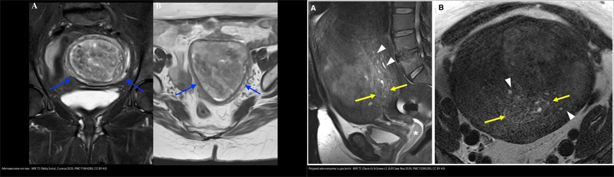
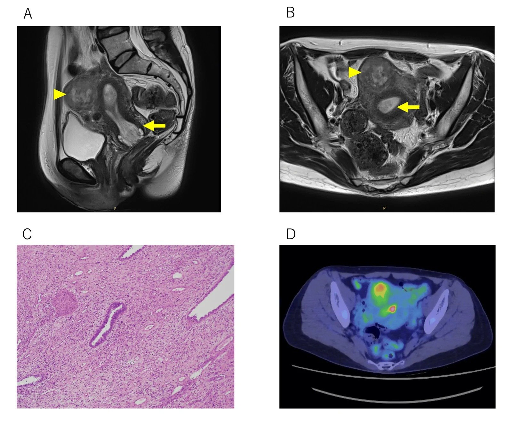
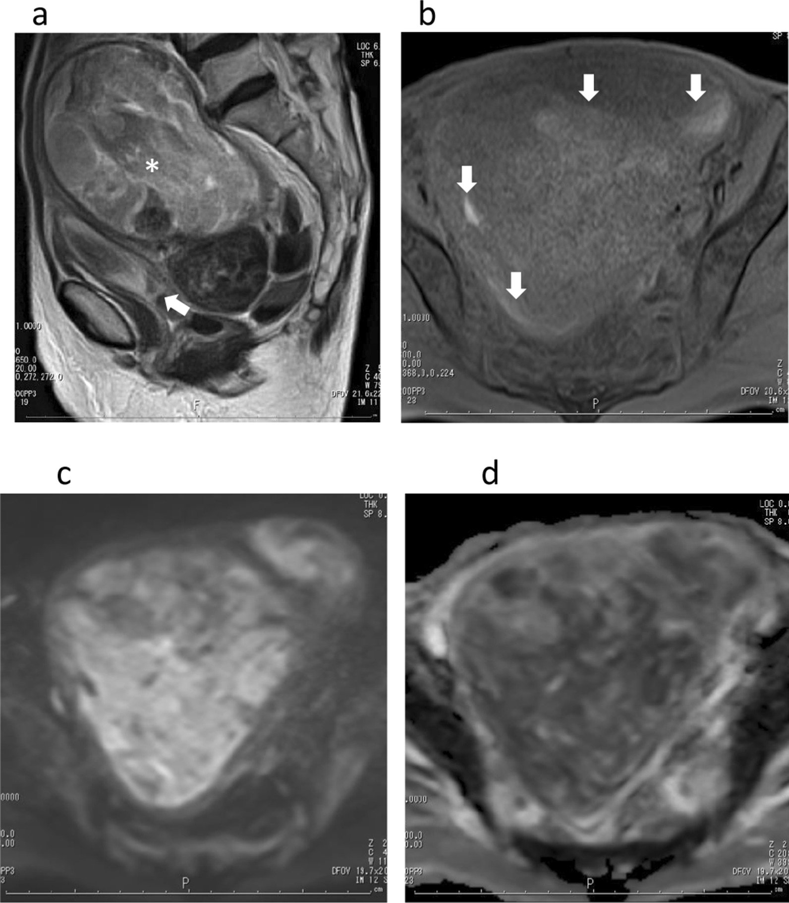
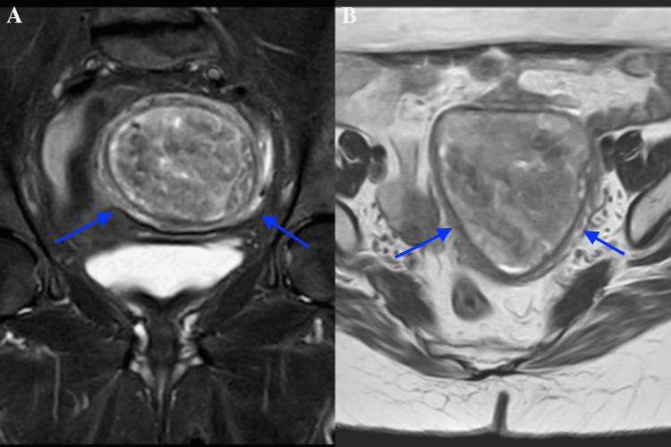
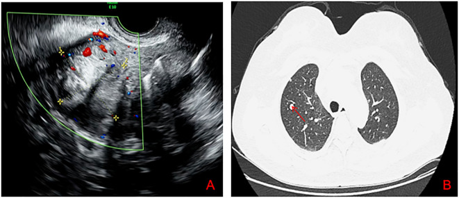

519 — Adenosarcoma tử cung & polyp nội mạc: "khối trong lòng tử cung" giả polyp / Uterine adenosarcoma & the great polyp mimic
Tags: pattern:khoi-long-tu-cung pattern:u-gia-polyp vung:tu-cung score:ADC protocol:MRI-tieu-khung protocol:sieu-am-dau-do
Mức chắc chắn (certainty): tổng hợp y văn (literature synthesis) — nhóm tự biên từ nhiều ca nguyên văn có hình CC BY/BY 4.0 (BMC Womens Health 2021; Cureus 2025/2026; Front Oncol 2026; Front Med 2026; BJR Case Rep 2026) + nghiên cứu đoàn hệ SARCUT; số liệu đối chiếu từng bài gốc, không gắn một ca đơn lẻ duy nhất.
1. Tổng quan bệnh học – cơ chế hình ảnh
- Vấn đề lâm sàng: adenosarcoma tử cung (uterine adenosarcoma, Müllerian adenosarcoma) là u hỗn hợp biểu mô–trung mô điển hình nhất của "khối trong lòng tử cung giả polyp". Bệnh nhân thường ra máu sau mãn kinh; siêu âm/MRI chỉ thấy một khối polypoid trong buồng tử cung — đọc nhầm thành polyp nội mạc lành và cắt polyp qua nội soi là sai lầm kinh điển. Ca nguyên văn Cureus 2026 (PMC13577044) chính xác như vậy: bệnh nhân 47 tuổi, MRI có khối polypoid 5,5 cm bám thân tử cung, ban đầu chẩn đoán "polyp nội mạc" → sinh thiết cắt polyp ra adenosarcoma có sarcoma phát triển vượt (sarcomatous overgrowth, SO).
- Bệnh học: adenosarcoma = biểu mô lành/không atypia + mô đệm ác tính (thường sarcoma thoi độ thấp). Đây là mắt xích giữa adenofibroma lành → adenosarcoma → carcinosarcoma (nơi cả biểu mô LẪN mô đệm đều ác). Chiếm ~5–10% sarcoma tử cung, ~0,2% u tử cung / ~1% ung thư phụ khoa; hay gặp ở tuổi 50–60 (bệnh nhân mãn kinh), nhưng vẫn có ở người trẻ.
- "Sarcoma phát triển vượt" (sarcomatous overgrowth, SO): khi > 25% thể tích u là sarcoma độ cao thuần (không còn biểu mô) → hành vi hung hãn, tái phát sớm, tiên lượng xấu. Các yếu tố tiên lượng xấu khác: xâm lấn cơ sâu, xâm lấn khoang mạch, atypia mô đệm, tuổi cao, giai đoạn II–III.
- TẠI SAO hình ảnh trông như vậy (vật lý + mô bệnh):
- Mô đệm sarcoma thoi dày đặc tế bào → "nhốt" nước nội bào → DWI sáng + ADC thấp (hạn chế khuếch tán THẬT). Đây là điểm khác căn bản với polyp nội mạc (ít tế bào → ADC cao).
- Thành phần hai pha + tuyến giãn nang → trên T2W khối tăng tín hiệu không đồng nhất + các ổ nang nhỏ T2 rất sáng ("tiny cysts"); ca BMC 2021 mô tả đúng như vậy.
- Hoại tử/xuất huyết (khối lớn vượt cấp máu) → ổ T1 sáng (methemoglobin) + ngấm thuốc không đồng nhất; ca Cureus 2025 đại thể có hoại tử/xuất huyết trong khối 6 cm.
- Khối mọc đầy buồng tử cung, giãn lòng, lan xuống ống cổ tử cung — hình thái "lòng tử cung căng to do khối" rất gợi ý; ca BMC 2021 khối tới 241 × 114 × 88 mm làm tử cung to 250 × 126 × 99 mm, KHÔNG xâm lấn cơ.
- Ngưỡng định lượng bắt buộc:
- SO = > 25% thể tích u là sarcoma độ cao (tiêu chuẩn Clement–Scully).
- Kích thước: polyp nội mạc trung bình 1,4–2,5 cm so với adenosarcoma trung bình ~6,5 cm (BMC 2021); nhưng u lớn (> 10 cm) KHÔNG đồng nghĩa có SO — nhiều adenosarcoma không SO cũng rất lớn.
- Sống còn: sống toàn bộ 5 năm giai đoạn I 60–80%; sống đặc hiệu bệnh 5 năm 48–79%. Đoàn hệ SARCUT (Mancari 2024, n = 32): DFS 5 năm 85,3%, OS 5 năm 89,5%; tuổi HR 1,09/năm (KTC 1,03–1,15; p = 0,004), giai đoạn FIGO II–III HR 17,75 (KTC 2,87–109,93; p = 0,002); tái phát sớm (< 12 tháng) gắn u > 30 mm + giai đoạn tiến xa.
- Di căn: phổi là nơi hay gặp nhất — trong chuỗi 110 ca Nhật (Tate) 75% tái phát xa là ở phổi; ca Front Oncol 2026 có di căn phổi sau 8 tháng hóa trị.
- Nguy cơ ác tính của polyp nội mạc nói chung: 0,5–5%. Trong 2.588 bệnh nhân cắt polyp (Kiestrzyn 2026): ung thư nội mạc 0,62%, tăng sinh có atypia 1,35%, tăng sinh không atypia 13,91%, polyp lành 84,12% — nghĩa là đại đa số polyp là lành, nhưng vẫn phải có ngưỡng nghi.
2. Mẫu hình + chẩn đoán phân biệt theo vị trí (gamut)
- Ba câu hỏi gỡ rối mọi "khối polypoid trong lòng tử cung" (nữ quanh/peri-menopausal ra máu):
- Bối cảnh: ra máu sau mãn kinh, khối to nhanh/tái phát sau đã cắt polyp, đẩy qua ống cổ tử cung?
- Xâm lấn cơ hay bờ đẩy? (bờ đẩy + cuống = lành; xâm lấn/thâm nhiễm = nghi ác)
- DWI sáng có hạn chế THẬT (ADC thấp) không? (adenosarcoma/sarcoma = ADC thấp; polyp/adenomyoma = ADC không thấp).
- Gamut theo bản chất (từ lành → ác):
- Lành, trong lòng tử cung: polyp nội mạc (kể cả polyp khổng lồ 4–12 cm vẫn phần lớn lành), polypoid adenomyoma (UPA — adenomyosis dạng khu trú), u xơ dưới niêm mạc (FIGO 0–2), adenofibroma.
- Tiền ung thư / ung thư biểu mô: tăng sinh nội mạc (có/không atypia), ung thư nội mạc thể polypoid.
- Sarcoma / hỗn hợp: adenosarcoma (biểu mô lành + mô đệm ác), carcinosarcoma (cả hai ác), ESS, LMS, UUS, di căn (vú, dạ dày, đại tràng).
- Đặc trưng từng thực thể:
- Polyp nội mạc: khối bầu dục bờ rõ, đồng nhất, T2 iso/giảm nhẹ so với nội mạc, một cuống mạch nuôi (pedicle artery) trên Doppler; SIS = khuyết khuyết rõ; ADC không thấp.
- Polypoid adenomyoma (UPA): khối trong buồng tử cung, nhiều ổ nang nhỏ T2 sáng + tín hiệu GIỐNG vùng chuyển tiếp (junctional zone); nền tử cung có adenomyosis ("venetian blind" trên siêu âm).
- Adenosarcoma: khối lớn, không đồng nhất, đầy buồng + lan ống cổ, nang nhỏ T2 sáng, DWI sáng/ADC thấp, có thể xâm lấn cơ; hay ra máu sau mãn kinh; tái phát sau cắt "polyp".
- Carcinosarcoma / ung thư nội mạc polypoid: khối nội mạc xâm lấn cơ, bờ không đều; ung thư nội mạc thường xâm lấn < hoặc ≥ 50% cơ; carcinosarcoma hình ảnh chồng lấp adenosarcoma → mô bệnh học phân biệt.
3. Bảng so sánh phân biệt (ma trận đối chiếu)
| Thực thể (entity) | Hình ảnh điển hình | Chốt vào (rule-in) | Chốt loại (rule-out) | Gợi ý xác nhận |
|---|---|---|---|---|
| Adenosarcoma | Khối polypoid lớn (~6,5 cm), đầy buồng + lan ống cổ, T2 không đồng nhất + nang nhỏ T2 sáng, ngấm không đồng nhất, DWI sáng | Khối lớn không đồng nhất + nang nhỏ + DWI hạn chế thật (ADC thấp) ở nữ ra máu sau mãn kinh | Khối nhỏ, đồng nhất, ADC không thấp, có cuống mạch đơn độc → polyp | Sinh thiết/cắt polyp qua nội soi + mô bệnh (không thể chốt chỉ bằng hình ảnh) |
| Polyp nội mạc | Bầu dục bờ rõ, đồng nhất, T2 iso/giảm nhẹ so với nội mạc, cuống mạch đơn độc (pedicle artery) | Cuống mạch đơn độc + bờ rõ + đồng nhất + ADC không thấp | Khối lớn không đồng nhất + DWI hạn chế thật → nghi adenosarcoma | SIS/hysteroscopy; mô bệnh |
| Polypoid adenomyoma (UPA) | Khối trong buồng, nhiều ổ nang nhỏ T2 sáng + tín hiệu giống junctional zone; nền adenomyosis | Tín hiệu JZ + nang nhỏ + nền adenomyosis | Bờ thâm nhiễm + ADC rất thấp → nghi adenosarcoma | MRI đa chuỗi + mô bệnh (hay bị gọi nhầm) |
| U xơ dưới niêm mạc (FIGO 0–2) | Khối đặc T2 tối đồng nhất, vỏ giả, không xâm lấn, ngấm kiểu u xơ | T2 tối + vỏ giả + không hạn chế khuếch tán | T2 sáng không đồng nhất + nang nhỏ → nghĩ adenosarcoma | MRI; so phim cũ |
| Ung thư nội mạc polypoid | Khối nội mạc bờ không đều, xâm lấn cơ, DWI hạn chế, ngấm kém hơn cơ | Xâm lấn cơ + bờ không đều + DWI hạn chế | Bờ đẩy rõ, không xâm lấn → nghĩ lành | Sinh thiết nội mạc (pipelle) + MRI phân giai đoạn |
| Carcinosarcoma | Khối lớn hỗn hợp, hoại tử/xuất huyết, xâm lấn cơ, có thể sa qua cổ tử cung | Hình ảnh chồng lấp adenosarcoma + hoại tử/xuất huyết rộng | Không tách được bằng hình ảnh → cần mô bệnh | Mô bệnh (cả biểu mô LẪN mô đệm ác) |

Trái: adenosarcoma nội mạc — khối trong buồng tử cung bờ rõ nhưng không đồng nhất, bờ không đều (mũi tên), xâm lấn/thâm nhiễm; ADC thấp. Phải: polypoid adenomyoma (u giả lành) — tử cung to, cơ không đồng nhất, khối trong buồng có nhiều ổ nang nhỏ T2 sáng (mũi tên đầu) + dải tín hiệu giống vùng chuyển tiếp (mũi tên). Nguồn: Rafiq S et al., Cureus 2025 (PMC11964285) + Davis AJ & Gomez E, BJR Case Rep 2026 (PMC13395283), CC BY 4.0. Ảnh ghép letterbox, giữ nguyên tỷ lệ.Dấu hiệu chốt then chốt
- DWI hạn chế THẬT (ADC thấp) là ranh giới chính: adenosarcoma có mô đệm dày đặc → ADC thấp; ca BMC 2021 đo ADC 1,26 ×10⁻³ mm²/s (ca 1) và 0,88 ×10⁻³ mm²/s (ca 2). Polyp nội mạc ít tế bào → ADC cao hơn.
- "Nang nhỏ T2 sáng" trong khối (tuyến giãn) là dấu cộng thêm — gặp ở adenosarcoma LẪN polypoid adenomyoma, nên không dùng một mình.
- Bối cảnh "cắt polyp rồi tái phát" / ra máu sau mãn kinh + khối to phải luôn nghĩ adenosarcoma cho tới khi có mô bệnh.
4. Protocol chụp + hệ phân độ/điểm chuẩn hóa
- Siêu âm đầu tay (TVUS) + Doppler màu: khối trong buồng; một cuống mạch đơn độc gợi ý polyp; mạch hóa nhiều/hỗn loạn gợi ý u. Ca Front Oncol 2026: TVUS thấy nốt trong cơ + khối đặc–nang ở phần phụ trái 65 × 46 mm, ban đầu chẩn đoán nhầm "u quái + u xơ".
- MRI tiểu khung (chuẩn vàng đánh giá bản chất + xâm lấn):
- T2W ≥ 2 bình diện (sagittal + axial, ± coronal), KHÔNG xóa mỡ: hình thái khối, nang nhỏ, vùng chuyển tiếp, xâm lấn cơ.
- T1W (± fat-sat): ổ T1 sáng = xuất huyết.
- DWI b = 800–1.000 + ADC: hạn chế khuếch tán thật; đo ADC tại vùng u còn sống, hạn chế nhất.
- T1W + Gd động học (DCE, fat-sat): ngấm không đồng nhất, hoại tử, xâm lấn cơ.
- Nội soi buồng tử cung + sinh thiết/cắt trọn tổn thương: tiêu chuẩn vàng — vì hình ảnh không phân biệt được adenosarcoma với polyp/adenomyoma. Cắt trọn qua nội soi (không sinh thiết nhỏ) để không bỏ sót SO.
- PET/CT: đánh giá di căn xa (ca Cureus 2026: FDG bắt ở cả tổn thương nội mạc LẪN khối trong cơ; không di căn xa). Phổi là nơi di căn hay gặp nhất → CT ngực trong theo dõi.
- Phân giai đoạn & yếu tố tiên lượng: adenosarcoma xếp giai đoạn theo hệ FIGO cho sarcoma tử cung; SO > 25%, xâm lấn cơ sâu, xâm lấn mạch, kích thước lớn và tuổi cao là các yếu tố xấu. Điều trị chuẩn = cắt tử cung toàn phần ± cắt hai phần phụ; bảo tồn sinh sản chỉ ở ca chọn lọc, chưa chuẩn hóa.
flowchart TD
A[Khoi polypoid trong long tu cung<br/>nu ra mau sau man kinh] --> B{Doppler: cuong mach don doc<br/>+ bo ro + dong nhat?}
B -->|Co| C[Polyp noi mac: cat qua noi soi + mo benh]
B -->|Khong| D{Co xam lan co / bo khong deu?}
D -->|Co| E[Nghi AC: ung thu noi mac / sarcoma -> sinh thiet + MRI phan giai doan]
D -->|Khong| F{DWI sang + ADC THAP that?}
F -->|Co, ADC thap| G[Adenosarcoma: mo NGUYEN KHOI<br/>+ CT nguc tim di can]
F -->|Khong| H{Co o nang nho T2 sang<br/>+ tin hieu giong JZ?}
H -->|Co| I[Polypoid adenomyoma: MRI da chuoi + mo benh]
H -->|Khong| J[U xo duoi niem mac: so phim cu, theo doi]
G --> K{Co SO > 25% tren mo benh?}
K -->|Co| L[Tien luong xau: hoa tri + theo doi sat phoi]
K -->|Khong| M[Tien luong tot hon: theo doi dai han]
5. Biến thể bình thường và cạm bẫy
- "To" không đồng nghĩa "ác": polyp nội mạc khổng lồ 4,0–12,0 cm ở nữ mãn kinh vẫn phần lớn lành (11/15 ca lành, có giãn nang — Wang 2026). Vì vậy kích thước một mình không chốt; phải dựa vào DWI/ADC, bờ, xâm lấn và mô bệnh.
- Sinh thiết "ra polyp lành" KHÔNG loại trừ adenosarcoma: ca Cureus 2025 sinh thiết nội mạc ban đầu ra polyp lành, MRI sau đó mới lộ khối bờ không đều; ca Cureus 2026 cắt "polyp" qua nội soi mới ra adenosarcoma. Khi hình ảnh nghi, phải cắt trọn tổn thương + xem kỹ mô bệnh.
- Polypoid adenomyoma (UPA) là "kẻ giả danh" hai chiều: vừa giống polyp nội mạc, vừa giống adenosarcoma (Front Oncol/adenosarcoma trong cổ tử cung, UPA trong buồng tử cung) — dấu tín hiệu giống junctional zone + nền adenomyosis giúp nghiêng về UPA.
- SO không đổi hình ảnh trên các chuỗi thường: BMC 2021 nhấn mạnh T2/T1/ngấm của adenosarcoma có SO không khác adenosarcoma không SO; chỉ DWI hạn chế mới gợi ý SO — nên đừng kỳ vọng phân biệt SO bằng T2.
- Cạm bẫy đo ADC: vùng hoại tử/xuất huyết cho ADC thấp giả → chỉ đo tại mô đặc còn sống.
- Satisfaction of search: khi thấy "polyp" hoặc "u xơ" trong buồng tử cung, phải quét toàn bộ cơ tử cung tìm ổ xâm lấn/thành phần đặc bất thường (ca Cureus 2026 có thêm khối trong cơ ở thành trước).
- Di căn ngoài tử cung: adenosarcoma có thể xuất phát ngoài tử cung (buồng trứng, phần phụ, cổ tử cung, thậm chí thận — Diagnostics 2026) và di căn phổi — luôn đọc phim ngực khi đã chẩn đoán.
6. Tự lượng giá — Blind Quiz ngay trên trang tĩnh
Ca 1 — Nữ 47 tuổi, ra máu tử cung bất thường; MRI có khối polypoid 5,5 cm trong buồng tử cung. Nhìn phim, mô tả trước.

- Gợi ý lâm sàng (clinical context): nữ 47 tuổi, rối loạn kinh/ra máu bất thường, khối trong buồng tử cung.
- Câu hỏi: Trên T2 (A/B) khối có đặc điểm gì? Ngoài khối trong buồng còn thấy gì? Vì sao không được chốt "polyp nội mạc"?
Bấm để hiện đáp án (findings + chẩn đoán)
- Dấu hiệu (findings): (A) T2 sagittal — khối polypoid trong buồng tử cung tăng tín hiệu không đồng nhất, có ổ nang nhỏ (mũi tên đầu), kèm khối trong cơ thành trước (mũi tên vàng); (B) T2 axial — khối trong buồng (mũi tên đầu) + khối trong cơ (mũi tên); (D) PET/CT — FDG bắt ở cả hai tổn thương.
- Chẩn đoán (diagnosis): adenosarcoma tử cung có sarcoma phát triển vượt (SO) — ban đầu bị chẩn đoán "polyp nội mạc", cắt polyp qua nội soi mới ra chẩn đoán. Xử trí: cắt tử cung toàn phần + hai phần phụ; hóa trị bổ trợ (doxorubicin + ifosfamide). Bài học: khối to, không đồng nhất, có khối kèm trong cơ → không chốt polyp.
- Nguồn ảnh: Suzuki N et al., Cureus 2026, PMC13577044, Fig. 1, CC BY 4.0.
Ca 2 — Nữ 76 tuổi, ra máu sau mãn kinh; khối đầy buồng tử cung lan xuống ống cổ. Nhìn DWI/ADC, mô tả trước.

- Gợi ý lâm sàng: nữ 76 tuổi, ra máu sau mãn kinh, bụng trướng.
- Câu hỏi: T2 (a) khối có gì? Ngấm thuốc (b) ra sao? DWI (c) và ADC (d) nói lên điều gì về mô học?
Bấm để hiện đáp án (findings + chẩn đoán)
- Dấu hiệu (findings): (a) T2 — khối tăng tín hiệu không đồng nhất đầy buồng tử cung, có ổ nang nhỏ T2 rất sáng (dấu hoa thị), lan xuống ống cổ (mũi tên); (b) sau tiêm — ngấm không đồng nhất + nang/hoại tử (mũi tên); (c) DWI sáng; (d) ADC tối (1,26 ×10⁻³ mm²/s) = hạn chế khuếch tán THẬT.
- Chẩn đoán (diagnosis): adenosarcoma có SO — DWI hạn chế phản ánh mô đệm sarcoma dày đặc tế bào; SO > 25% không đổi hình ảnh T2/ngấm mà chỉ gợi ý qua DWI. Tiên lượng xấu: ca này tái phát sarcomatosis phúc mạc sau 6 tháng và tử vong.
- Nguồn ảnh: Nakai G et al., BMC Womens Health 2021, PMC8680034, Fig. 1, CC BY 4.0.
Ca 3 — Nữ 52 tuổi, mãn kinh 2 năm, ra máu âm đạo 4 tháng; sinh thiết nội mạc ra "polyp lành". MRI dưới đây.

- Gợi ý lâm sàng: nữ 52 tuổi, mãn kinh 2 năm, ra máu 4 tháng; sinh thiết ban đầu "polyp lành".
- Câu hỏi: Bờ khối và tính chất xâm lấn? Có nên tin kết quả sinh thiết "lành" để dừng lại không?
Bấm để hiện đáp án (findings + chẩn đoán)
- Dấu hiệu (findings): (A) T2 coronal fat-sat — khối lớn bờ rõ nhưng KHÔNG đồng nhất, bờ không đều/thâm nhiễm (mũi tên); (B) T2 axial — khối chiếm buồng tử cung với tính chất xâm lấn (mũi tên). Đại thể: khối 6 cm có hoại tử/xuất huyết.
- Chẩn đoán (diagnosis): adenosarcoma nội mạc (biểu mô lành + mô đệm ác; ER/PR dương ở mô đệm). Sinh thiết "polyp lành" KHÔNG loại trừ adenosarcoma — hình ảnh nghi ác buộc phải cắt trọn tổn thương + mô bệnh. Xử trí: cắt tử cung toàn phần + hai phần phụ + hóa trị bổ trợ, theo dõi sát.
- Nguồn ảnh: Rafiq S et al., Cureus 2025, PMC11964285, Fig. 1, CC BY 4.0.
Ca 4 — Nữ 56 tuổi, mãn kinh, đau hông trái; siêu âm thấy khối đặc–nang phần phụ, CT ngực sau 8 tháng hóa trị.

- Gợi ý lâm sàng: nữ 56 tuổi, mãn kinh 2 năm, đau hông trái; ban đầu chẩn đoán nhầm "u quái + u xơ".
- Câu hỏi: (A) Siêu âm Doppler cho thấy gì? (B) CT ngực có gì? Điều này nói gì về hành vi của adenosarcoma có SO?
Bấm để hiện đáp án (findings + chẩn đoán)
- Dấu hiệu (findings): (A) TVUS Doppler — nốt giảm âm trong cơ + khối đặc–nang mạch hóa ở phần phụ trái (65 × 46 mm); (B) CT ngực cửa sổ phổi — nốt di căn phổi hai bên (mũi tên đỏ).
- Chẩn đoán (diagnosis): adenosarcoma tử cung có SO + di căn phổi. SO + xâm lấn cơ là yếu tố tiên lượng xấu; phổi là nơi di căn hay gặp nhất (75% tái phát xa ở phổi). Phải chụp CT ngực khi đã chẩn đoán.
- Nguồn ảnh: Qi X et al., Front Oncol 2026, PMC13441759, Fig. 1, CC BY 4.0.
Ca 5 — Ảnh ghép: hai khối trong lòng tử cung trên MRI T2. Bên nào là adenosarcoma, bên nào là "u giả" lành?
- Gợi ý lâm sàng: một ca ra máu sau mãn kinh với khối không đồng nhất; một ca thiếu máu nặng do rong kinh với nền adenomyosis.
- Câu hỏi: Dấu hiệu phân biệt? Vì sao vẫn phải có mô bệnh?
Bấm để hiện đáp án (findings + chẩn đoán)
- Trái: adenosarcoma — khối trong buồng bờ không đều, không đồng nhất, thâm nhiễm; DWI sáng/ADC thấp; nguy cơ SO > 25% → tiên lượng xấu.
- Phải: polypoid adenomyoma (lành) — tử cung to, cơ không đồng nhất, khối trong buồng có nhiều ổ nang nhỏ T2 sáng + tín hiệu giống vùng chuyển tiếp; nền adenomyosis. Lành nhưng dễ bị gọi nhầm adenosarcoma.
- Chốt: hình ảnh nghiêng về bên nào vẫn phải có mô bệnh để phân định — adenosarcoma (biểu mô lành + mô đệm ác) vs UPA (lành).
- Nguồn: Rafiq S et al. (PMC11964285, CC BY 4.0) + Davis AJ & Gomez E (PMC13395283, CC BY 4.0).
Bài liên quan chéo
- 500 – Tổng quan Hệ Vú & Sản Phụ khoa
- 520 – U xơ cơ tử cung (FIGO 0–8), adenomyosis & nội mạc
- 525 – Ung thư nội mạc & cổ tử cung: FIGO trên MRI
- 526 – Sarcoma tử cung & carcinosarcoma vs u xơ
- 527 – U mô đệm nội mạc tử cung: ESN/LG-ESS/HG-ESS/UUS
- 518 – Morcellation & leiomyomatosis peritonealis disseminata (LPD)
- 571 – Sẩy thai tái diễn: tiếp cận hình ảnh tử cung
Ảnh
- 6 ảnh (CC BY 4.0 ×5 + CC BY ×1) + 1 ảnh ghép (CC BY 4.0 kế thừa). Nguồn + giấy phép từng ảnh trong
images/CREDITS.md.
Không dùng để chẩn đoán độc lập khi chưa có người hướng dẫn.